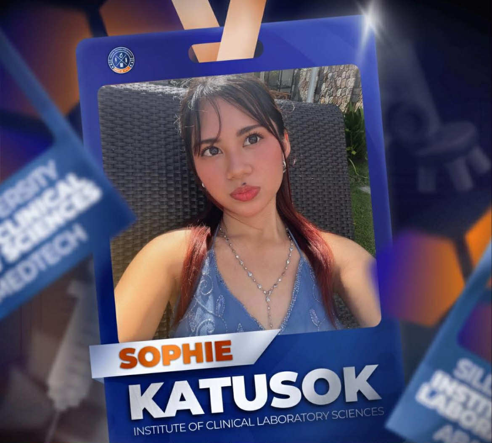

About Me
I am Francesca Melina P. Frange, a second-year BS Medical Technology student from Silliman University. Born and raised in Sagay City, Negros Occidental, a vibrant coastal city known for its natural beauty and warm people.
Beyond academics, I find balance and creativity through crochet, painting, reading, and music. These hobbies allow me to express myself and recharge my mind. I also enjoy stepping outside my comfort zone—exploring new places, engaging with diverse cultures, and meeting new people—as I believe that true learning happens through experience and curiosity.
My ultimate goal is to graduate with excellence, become a competent and compassionate Medical Technologist, and contribute meaningfully to society by applying my skills in healthcare and education. I also aspire to travel and immerse myself in diverse cultures, continuously learning from the world around me.
Education, to me, is more than academic achievement—it is a journey of discovery, empathy, and lifelong growth.